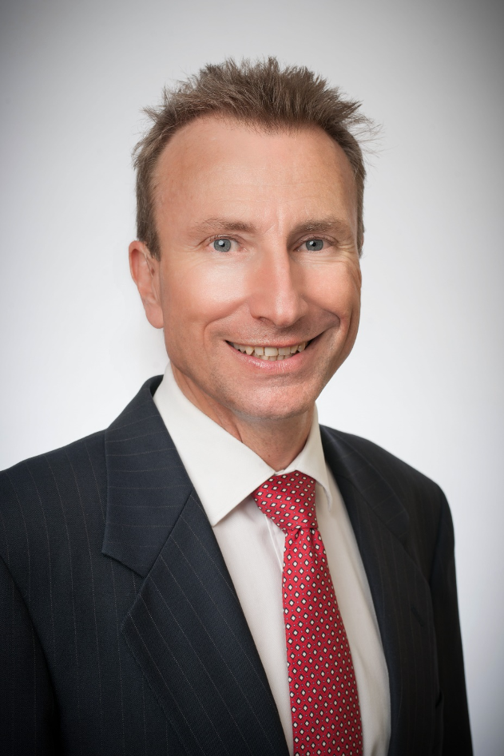

Dr. Scott Kiel-Chisholm
by Scott Kiel-Chisholm, 11 Oct 2021
Neural interface systems encompass sophisticated technology that enables integration of the human brain and body with an artificial device. The complexity of the brain and neural system is immense so neuroscientific research is an integral part of the development of neural interface devices. My PhD thesis, titled Civil Liability Challenges for the Law and Neural Interface Devices: Reconceptualising the Law, examined the challenges that the melding of mind and machine through neural interface presents to the existing legal frameworks and determined that, in particular circumstances, the law will require re-evaluation and adaptation.

I’m a Lecturer and researcher at the School of Law, Faculty of Business and Law at Queensland University of Technology (QUT). I’m also a researcher in the Datafication and Automation of Human Life Research Program at the Faculty of Law, QUT focussing on Regulating Life Sciences, Robotics, Neural Interface and the Law.
My research continues in neural interface and the law extending beyond the scope of the PhD thesis, including neuroethics, the design and development of neurotechnologies and how the digital and associated automated technologies are affecting, changing or challenging human life. This involves innovative and interdisciplinary collaborative research that enhances the translation of research outcomes into the community.
Contact Details:
Dr Scott Kiel-Chisholm | Lecturer | Academic Lead - Postgraduate Programs
School of Law | Queensland University of Technology
Phone: +61 7 3138 1602 | Room C749
GPO Box 2434 | 2 George Street, Brisbane QLD 4000 | CRICOS No. 00213
Member, Datafication and Automation of Human Life Research Program